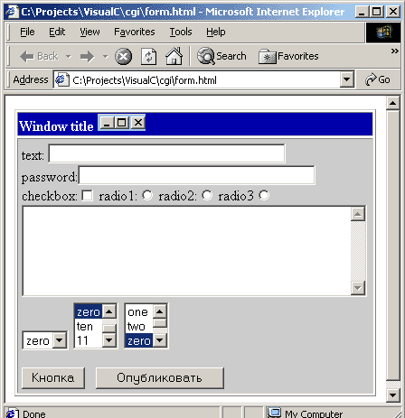

Создание HTML-форм
Для создания html-формы используется команда form. У нее могут быть
следующие параметры:
- NAME - определяет имя формы, обычно не указывается. Применяется для идентификации формы, если в документе присутствует несколько форм.
- ACTION - обязательный параметр, он задает путь к скрипту, который будет запущен веб-сервером.
- METHOD - определяет способ отправки параметров формы. Принимает значение GET или POST.
- TARGET - определяет окно, в которое возвращается результат обработки отправленной формы. Возможные значения : _self, _parent, _top, _blank или явно указанное имя окна.
Простой пример:
<form method=POST action=/cgi-bin/gb_show.exe>
<input type=text name=text value="Значение по умолчанию" size=40>
<input type=submit value=Опубликовать>
</form>
|
Здесь мы создали форму, которую будет обрабатывать программа gb_show.exe.
Параметр method, указывает каким способом передаются параметры в программу gb_show.exe.
Какой именно способ указывать, зависит от программы gb_show.exe, которая будет обрабатывать
вашу html-форму. В этом параграфе вы должны научиться создавать формы в html-документе.
Их использовать вы сможете после установки и настройки веб-сервера, но об этом во второй части книги.
Внутри команды form могут быть следующие элементы:
- поле ввода для строки
- поле ввода для пароля
- кнопки
- радиокнопки
- список
- поле ввода для текста
- checkbox - поле ввода для атрибутов типа Boolean
- рисунок
Поле ввода для строки
Поле ввода для строки создается командой <input type=text
name=text value="Начальное значение" size=40 maxlength=80>.
- name задает имя параметра
- value - начальное значение
- size - размер видимого поля на экране
- maxlength - максимальный размер строки ввода
Атрибут value обычно не указывается, это означает, что после загрузки HTML-страницы,
в поле ввода будет пустая строка.
Обратите внимание на параметр
maxlength. Его желательно указывать, чтобы ограничить максимально допустимое количество
символов. Это полезно по двум причинам. Во-первых, предостеречь пользователя
от неправильного ввода. Представьте, что у вас большая форма с кучей полей.
Человек ошибся, в индексе вместо шести цифр указал семь. Если вы не
зададите атрибут maxlength равным шести, то бедному пользователю придется
ждать, пока данные отправятся CGI-программе, потом пока программа выдаст
сообщение об ошибке и т.д. Во-вторых, это будет предупреждением хакерам, что
ваш сайт не так просто сломать. Но эту тему мы разберем отдельно в главе
"Безопасность CGI".
Упражнение
Попробуйте создать следующую форму. Код см. здесь.

|